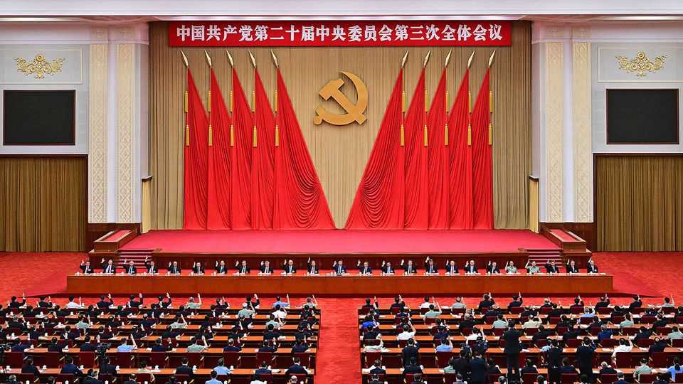

China’s party elite gathers with purges and promotions in mind
Xi seeks new ways to curb corruption before a leadership shake-up

Oct 22nd 2026
“Off-sites” at hotels are among the more sorrowful features of modern working life. Who does not dread the awkward conversation over the breakfast buffet, the unexpected grilling from the boss during a presentation or the struggle to stay awake through the post-lunch carb crash? Spare a thought, then, for the 300 or so members of the Chinese Communist Party’s Central Committee who will soon attend one of the most brutal gatherings of the genre. The Soviet-style Jingxi Hotel in Beijing, where it takes place roughly once a year, is run by the armed forces. Mobile phones are thought to be banned, as are alcohol and cigarettes. Participants have to assume that every word is recorded by note-takers or bugs.
The “fifth plenum”, to be held from October 26th to 29th, will be especially fraught. It comes about one year before a quinquennial congress that is expected to give Xi Jinping a fourth term as the party’s leader. That means that he and other party bigwigs will be scrutinising potential candidates for promotion next year to the top decision-making bodies: the Politburo and its (now seven-strong) Standing Committee. What’s more, the theme of this year’s plenum is “full and rigorous party self-governance”—in other words, combating the corruption and indiscipline that continue to frustrate Mr Xi. So attendees’ personal conduct will be examined even more closely than usual.
Mr Xi might also spring a surprise, perhaps by floating proposals to adopt a new title such as party chairman (held by Mao Zedong). A plenum in 2016, also a year before a congress, established Mr Xi as the party’s “core leader”. That paved the way for him to scrap term limits on the presidency. And a year before a congress in 2022 another plenum further elevated his authority by granting his political doctrine equal status to those of Mao, Communist China’s founder, and Deng Xiaoping, the architect of reforms that began in 1979.
The plenum’s precise mechanics are secret. But based on limited official accounts of previous ones, it will start with Mr Xi delivering a report from the Politburo on its work over the preceding year. Next he will make a speech explaining the main item on the plenum’s agenda, in this case a “decision” on party self-governance. Participants are then expected to divide into about ten groups to discuss the report and the proposed decision. These breakout sessions usually include one each for military delegates, regional leaders and the chiefs of state-owned enterprises.
In the past the smaller meetings have sometimes involved fierce debate over ideology or policy. Not so under Mr Xi. Each delegate is expected to express approval of the party chief’s leadership, the Politburo’s report and the decision. But they must try to do so in pithy, creative terms while heeding Mr Xi’s increasingly dire warnings against self-promotion, flattery or performative parroting of party slogans. If they strike the right balance they might hope to get their remarks included in the note-takers’ summary of discussions, which is thought to be sent to top leaders at the end of each day. Better still is to catch the eye of Mr Xi, who usually drops into group talks in person along with other Standing Committee members.
On the last day the delegates reconvene and vote (unanimously, unless they are intent on career suicide) to confirm the expulsion of purged Central Committee members and to appoint replacements. That could reveal fresh victims of Mr Xi’s purges, which have already ensnared some 20 full members of this Central Committee, including three in the Politburo. Some of the committee’s members have already been replaced, leaving eight empty seats. Another 15 could be expelled, reckons the Asia Society Policy Institute (ASPI), a think-tank in New York.
There could be signs that others are in trouble if they do not attend or are not promoted. And there may be new appointments to the Central Military Commission, which controls the armed forces (although that normally happens at a congress). The commission currently has just two members—Mr Xi and a general—following a purge of the other five.
Participants then vote (unanimously again) to approve the decision on party governance. It is expected to reinforce anti-corruption work with measures including closer oversight of government spending, enhanced use of big data and more accountability for officials whose subordinates break the party’s rules. It might also bolster the power of bodies that investigate errant officials. In a speech published (with omissions) on October 15th, Mr Xi said the party needed to “confine power to a cage of institutions”. He cited threats including “nice guys” who ignore problems, “two-faced” officials who secretly hold liberal views, and a “revolving door” between business and government.
Mr Xi’s goal appears to be to win support among the elite for his next five-year term and his quest to revitalise the party. If so, he is also revealing the limits of his powers to implement change, suggest Neil Thomas, Lobsang Tsering and Shengyu Wang of ASPI. In a recent paper they compare Mr Xi to a Leninist Logan Roy, a patriarchal character in the TV series “Succession”. Like Logan, Mr Xi “presides over an enormous enterprise, exercises commanding authority and remains perpetually disappointed by the people expected to carry out his wishes”. In Mr Xi’s view, they add, there is only one model of diligence to emulate: that of his own younger self.■
Subscribers can sign up to Drum Tower, our new weekly newsletter, to understand what the world makes of China—and what China makes of the world.